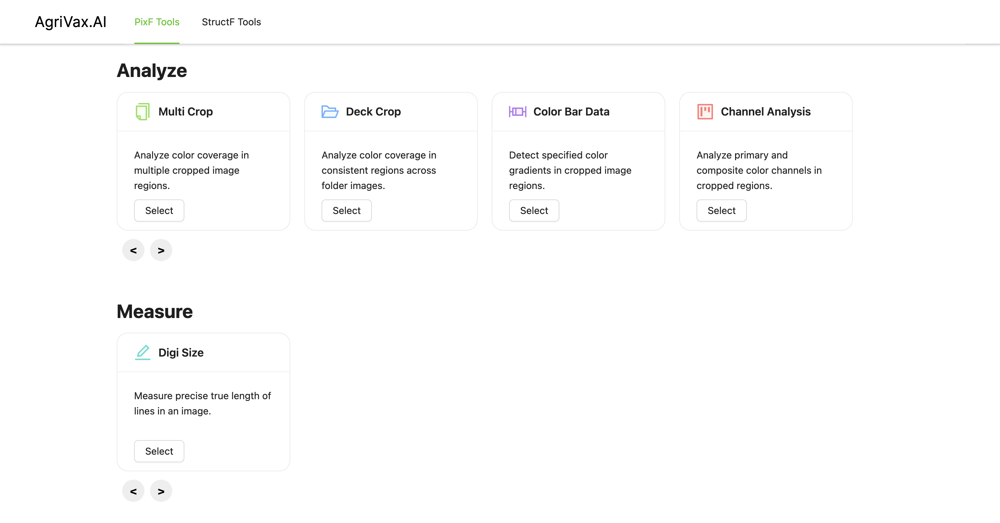

Tools

PixF Tools
Tools to analyze pixel-based features across multiple images such as coverage, shape, and segmentation in Agrivax.AI.

StructF Tools
Structure-based tools used for extracting, comparing, and validating predicted protein structures within Agrivax.AI.